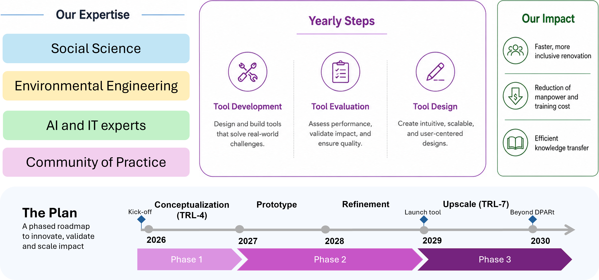

Welkom bij DPARt
Volg de ontwikkeling van het project, de website, workshops en toekomstige onderzoeksresultaten.
Digital Pathways for Accelerating Collective Decision-Making of Energy Renovation in the Built Environment.
Ontdek het projectOnderzoeksproject
DPARt ontwikkelt digitale hulpmiddelen die VvE-leden, besturen en professionals ondersteunen bij gezamenlijke beslissingen over energierenovatie.
Over het project
Gebouwen met Verenigingen van Eigenaars zijn vaak ouder en minder energiezuinig dan andere woningen. Zelfs wanneer enkele eigenaren enthousiast zijn om hun gebouw te verduurzamen, kost besluitvorming vaak veel tijd of worden voorstellen door andere eigenaren afgewezen.
Bewoners hebben verschillende wensen, ervaren verschillende belemmeringen en verschillen in kennisniveau. DPARt onderzoekt hoe digitale hulpmiddelen dit proces toegankelijker, begrijpelijker en transparanter kunnen maken.

Thema's
Bewoners, onderzoekers, gemeenten en professionals ontwerpen de oplossing gezamenlijk.
Ontdek meer →Renovatiescenario's worden digitaal nagebootst, vergeleken en inzichtelijk gemaakt.
Ontdek meer →Gebruikers leren via AI-tools en spelvormen over kosten, regelgeving en collectieve besluitvorming.
Ontdek meer →Resultaten
Dit project heeft als doel digitale hulpmiddelen op te leveren, waaronder een AI-assistent, simulatiemodellen en een interactief leerplatform.
Deze hulpmiddelen helpen bewoners en professionals om renovatiemogelijkheden beter te begrijpen en gezamenlijk afgewogen keuzes te maken.
Nieuws & events
Volg de ontwikkeling van het project, de website, workshops en toekomstige onderzoeksresultaten.
DPARt brengt onderzoekers, gemeenten, bedrijven en eindgebruikers samen in co-creatie.
Het project combineert Digital Twins, AI en gamification voor ondersteuning van VvE's.
Samenwerking
DPARt wordt uitgevoerd in samenwerking met kennisinstellingen, publieke organisaties en marktpartijen.